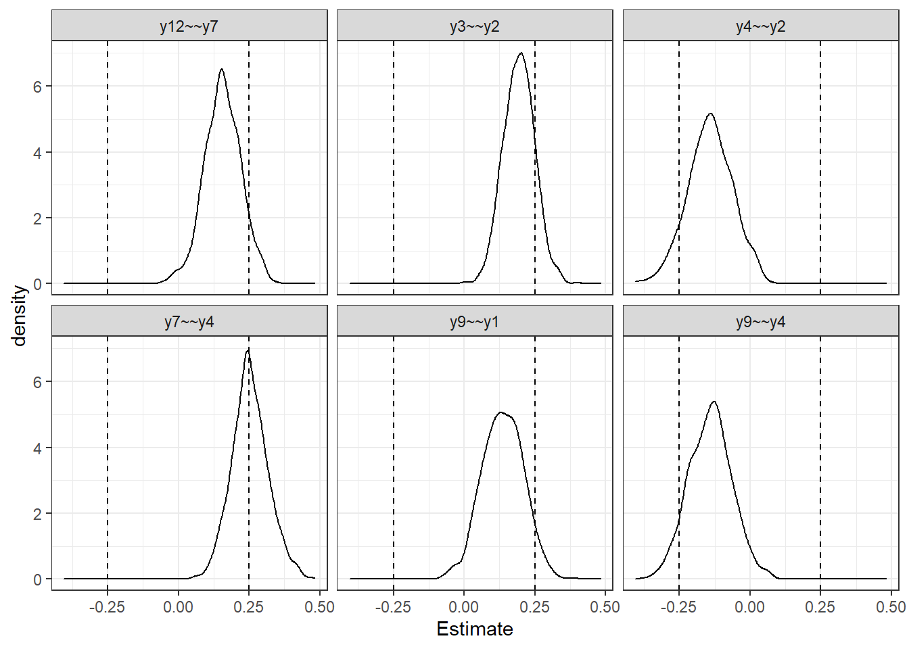
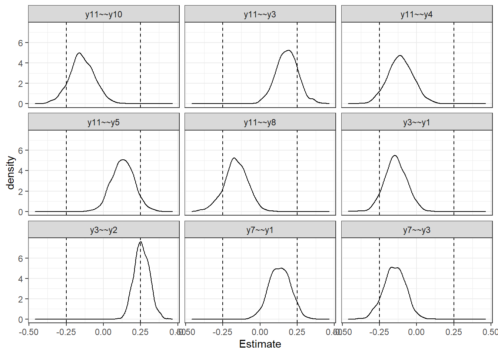

Last updated: 2020-10-22
Checks: 6 1
Knit directory: laplace-local-fit/
This reproducible R Markdown analysis was created with workflowr (version 1.6.2). The Checks tab describes the reproducibility checks that were applied when the results were created. The Past versions tab lists the development history.
The R Markdown file has unstaged changes. To know which version of the R Markdown file created these results, you’ll want to first commit it to the Git repo. If you’re still working on the analysis, you can ignore this warning. When you’re finished, you can run wflow_publish to commit the R Markdown file and build the HTML.
Great job! The global environment was empty. Objects defined in the global environment can affect the analysis in your R Markdown file in unknown ways. For reproduciblity it’s best to always run the code in an empty environment.
The command set.seed(20200217) was run prior to running the code in the R Markdown file. Setting a seed ensures that any results that rely on randomness, e.g. subsampling or permutations, are reproducible.
Great job! Recording the operating system, R version, and package versions is critical for reproducibility.
Nice! There were no cached chunks for this analysis, so you can be confident that you successfully produced the results during this run.
Great job! Using relative paths to the files within your workflowr project makes it easier to run your code on other machines.
Great! You are using Git for version control. Tracking code development and connecting the code version to the results is critical for reproducibility.
The results in this page were generated with repository version 40d9a1e. See the Past versions tab to see a history of the changes made to the R Markdown and HTML files.
Note that you need to be careful to ensure that all relevant files for the analysis have been committed to Git prior to generating the results (you can use wflow_publish or wflow_git_commit). workflowr only checks the R Markdown file, but you know if there are other scripts or data files that it depends on. Below is the status of the Git repository when the results were generated:
Ignored files:
Ignored: .Rhistory
Ignored: .Rproj.user/
Ignored: manuscript2/fig/
Untracked files:
Untracked: manuscript/(PADGETT) laplace_local_fit_2020_10_15 (AQUINO review).docx
Untracked: manuscript/laplace_local_fit_2020_10_21.docx
Untracked: manuscript/laplace_local_fit_2020_10_22.docx
Untracked: manuscript/~$place_local_fit_2020_10_22.docx
Unstaged changes:
Modified: analysis/index.Rmd
Modified: analysis/laplace_approx.Rmd
Modified: analysis/simulation_study.Rmd
Note that any generated files, e.g. HTML, png, CSS, etc., are not included in this status report because it is ok for generated content to have uncommitted changes.
These are the previous versions of the repository in which changes were made to the R Markdown (analysis/laplace_approx.Rmd) and HTML (docs/laplace_approx.html) files. If you’ve configured a remote Git repository (see ?wflow_git_remote), click on the hyperlinks in the table below to view the files as they were in that past version.
| File | Version | Author | Date | Message |
|---|---|---|---|---|
| Rmd | 40d9a1e | noah-padgett | 2020-10-15 | updated publication figure |
library(coda)
library(mvtnorm)
library(lavaan)This is lavaan 0.6-7lavaan is BETA software! Please report any bugs.library(data.table)
library(dplyr)
Attaching package: 'dplyr'The following objects are masked from 'package:data.table':
between, first, lastThe following objects are masked from 'package:stats':
filter, lagThe following objects are masked from 'package:base':
intersect, setdiff, setequal, unionlibrary(tcltk)
wd <- getwd()
source(paste0(wd, "/code/utility_functions.R"))
|
| | 0%# ========================================== #
# ========================================== #
# function: get_prior_dens()
# ========================================== #
# use: gets the appropriate prior for the
# parameter of interest
#
get_prior_dens <- function(pvalue, pname,...){
if(pname %like% 'lambda'){
out <- dnorm(pvalue, 0, 1, log=T)
}
if(pname %like% 'dphi'){
out <- dgamma(pvalue, 1, 0.5, log=T)
}
if(pname %like% 'odphi'){
out <- dnorm(pvalue, 0, 1, log=T)
}
if(pname %like% 'dpsi'){
out <- dgamma(pvalue, 1, 0.5, log=T)
}
if(pname %like% 'odpsi'){
out <- dnorm(pvalue, 0, 1, log=T)
}
if(pname %like% 'eta'){
out <- dnorm(pvalue, 0, 10, log=T)
}
if(pname %like% 'tau'){
out <- dnorm(pvalue, 0, 32, log=T)
}
return(out)
}
# ========================================== #
# ========================================== #
# function: get_log_post()
# ========================================== #
# use: uses the model, parameters, and data to
# to calculate log posterior
#
# arguments:
# p - names vector of parameters
# sample.data - data frame of raw data
# cfa.model - list of model components
#
get_log_post <- function(p, sample.data, cfa.model,...) {
out <- use_cfa_model(p, cov(sample.data), cfa.model)
log_lik <- sum(apply(sample.data, 1, dmvnorm,
mean=out[['tau']],
sigma=out[['Sigma']], log=T))
log_prior<-0
if(length(p)==1){
log_prior <- get_prior_dens(p, names(p))
} else {
i <- 1
for(i in 1:length(p)){
log_prior <- log_prior + get_prior_dens(p[i], names(p)[i])
}
}
log_post <- log_lik + log_prior
log_post
}
# ========================================== #
# ========================================== #
# function: laplace_approx()
# ========================================== #
# use: runs the laplace approximate for a
# given parameter
#
# arguments:
# model - list of model components (lambda...)
# inits - initial values
# no.samples -
#
# ========================================== #
# ========================================== #
# function: use_cfa_model()
# ========================================== #
# use: take in parameters, data, and model to
# obtain the log-likelihood
#
# arguments:
# theta - vector of parameters being optimized
# sample.cov - samplecovariance matrix
# cfa.model - list of model parameters
use_cfa_model <- function(theta, sample.cov, cfa.model,...){
# Compue sample statistics
p<-ncol(sample.cov)
S<-sample.cov
# unpack model
lambda <- cfa.model[[1]]
phi <- cfa.model[[2]]
psi <- cfa.model[[3]]
#tau <- cfaModel[[4]]
#eta <- cfaModel[[5]]
# number factor loadings
lam.num <- length(which(is.na(lambda)))
lambda[which(is.na(lambda))] <- theta[1:lam.num]
nF = ncol(lambda)
# number elements in factor (co)variance matrix
phi.num <- length(which(is.na(phi)))
dphi.num <- sum(is.na(diag(phi))==T)
odphi.num <- sum(is.na(phi[lower.tri(phi)])==T)
if(phi.num > 0){
if(dphi.num == 0){
phi[which(is.na(phi))] <- theta[(lam.num+1):(lam.num+phi.num)]
} else {
diag(phi) <- theta[(lam.num+1):(lam.num+dphi.num)]
phi[which(is.na(phi))] <- theta[(lam.num+dphi.num+1):(lam.num+phi.num)]
}
}
phi <- low2full(phi) # map lower to upper
# number elements in error (co)variance matrix
psi.num <- length(which(is.na(psi)))
dpsi.num <- sum(is.na(diag(psi))==T)
odpsi.num <- sum(is.na(psi[lower.tri(psi)])==T)
if(psi.num > 0){
if(dpsi.num == 0){
psi[which(is.na(psi))] <- theta[(lam.num+1):(lam.num+psi.num)]
} else {
diag(psi) <- theta[(lam.num+1):(lam.num+dpsi.num)]
psi[which(is.na(psi))] <- theta[(lam.num+dpsi.num+1):(lam.num+psi.num)]
}
}
psi <- low2full(psi)
# number of factor scores
#eta.num <- length(eta)
#eta <- matrix(theta[(lam.num+phi.num+psi.num+tau.num+1):(lam.num+phi.num+psi.num+tau.num+eta.num)],
# nrow=nF)
# mean center eta
#for(i in 1:nF){
# eta[i, ] <- eta[i,] - mean(eta[,i])
#}
# # number of intercepts
# tau.num <- length(tau)
# tau <- matrix(theta[(lam.num+phi.num+psi.num+1):(lam.num+phi.num+psi.num+tau.num)], ncol=1)
# tau <- repeat_col(tau, ncol(eta))
# compute model observed outcomes
#Y <- tau + lambda%*%eta
tau <- numeric(p)
# compute model implied (co)variance matrix
Sigma<-lambda%*%phi%*%(t(lambda)) + psi
#return fit value
out <- list(Sigma, lambda, phi, psi, tau)
names(out) <- c('Sigma', 'lambda', 'phi', 'psi', 'tau')
return(out)
}
# ========================================== #
# ========================================== #
# function: laplace_local_fit()
# ========================================== #
# use: uses the fittes lavaan object to run
# the proposed method
#
# arguments:
# fit - fitted lavaan model
# standardized - logical for whether to standardize
# cut.load - cutoff for value of loading to care about default = 0.3
# cut.cov - cutoff for value of covariances to care about default = 0.1
# opt - list of parameters to pass to interior functions
# sum.print - logical indicator of whether to print the summary table upon completion
# counter - logical indicator of whether to print out a (.) after each
# parameter is completed
#
laplace_local_fit <- function(fit, cut.load = 0.3, cut.cov = 0.1, standardize=T,
opt=list(scale.cov=1, no.samples=1000),
all.parameters=F,
sum.print=F, pb=T,...){
# Observed Data
sampleData <- fit@Data@X[[1]]
# sample covariance matrix
sampleCov <- fit@SampleStats@cov[[1]]
# extract model
extractedLavaan <- lavMatrixRepresentation(partable(fit))
factNames <- unique(extractedLavaan[extractedLavaan[,"mat"]=="lambda", "lhs"])
varNames <- unique(extractedLavaan[extractedLavaan[,"mat"]=="lambda", "rhs"])
# extract factor loading matrix
lambda <- extractedLavaan[ extractedLavaan$mat == "lambda" ,]
lambda <- convert2matrix(lambda$row, lambda$col, lambda$est)
colnames(lambda) <- factNames
rownames(lambda) <- varNames
# extract factor covariance matrix
phi <- extractedLavaan[ extractedLavaan$mat == "psi" ,]
phi <- convert2matrix(phi[,'row'], phi[,'col'], phi[,'est'])
phi <- up2full(phi)
colnames(phi) <- rownames(phi) <- factNames
# extract error covariance matrix
psi <- extractedLavaan[ extractedLavaan$mat == "theta" ,]
psi <- convert2matrix(psi[,'row'], psi[,'col'], psi[,'est'])
psi[upper.tri(psi)] <- 0
colnames(psi) <- rownames(psi) <- varNames
# need to create list of all NA parameters in the above matrices
if(all.parameters == T){
lambdaA <- lambda
phiA <- phi
psiA <- psi
lambdaA[!is.na(lambdaA)] <- NA
phiA[!is.na(phiA)] <- NA
psiA[!is.na(psiA)] <- NA
} else{
lambdaA <- lambda
phiA <- phi
psiA <- psi
}
lamList <- as.matrix(which(is.na(lambdaA), arr.ind = T))
il <- nrow(lamList)
phiList <- as.matrix(which(is.na(phiA), arr.ind = T))
ip <- il + nrow(phiList)
psiList <- as.matrix(which(is.na(psiA), arr.ind = T))
it <- ip + nrow(psiList)
modList <- rbind(lamList, phiList, psiList)
# number of variables
# create names for each condition
vnlamList <- lamList
vnlamList[,2] <- paste0(factor(vnlamList[,2], levels = order(unique(vnlamList[,2])),labels=factNames))
vnlamList[,1] <- rownames(lamList)
vnlamList[,2] <- paste0(vnlamList[,2],"=~",vnlamList[,1])
vnphiList <- phiList
if(nrow(phiList)>0){
vnphiList[,1] <- paste0(factor(phiList[,1], levels = order(unique(vnphiList[,1])),labels=factNames))
vnphiList[,2] <- paste0(factor(phiList[,2], levels = order(unique(phiList[,2])),labels=factNames))
}
vnpsiList <- psiList
vnpsiList[,1] <- rownames(psiList)
vnpsiList[,2] <- paste0(vnpsiList[,1],"~~y", psiList[,2])
nameList <- rbind(vnlamList, vnphiList, vnpsiList)
# ========================================================== #
# ========================================================== #
# iterate around this function
fitResults <- matrix(nrow=opt[[2]], ncol=it)
# progress bar
progress_bar <- txtProgressBar(min = 0, max = it, style = 3)
iter <- 1
for(iter in 1:it){
# extract iteration information from modList
x <- modList[iter, ]
# do we need to update lambda?
if(iter <= il){
Q <- lambda
Q[is.na(Q)] <- 0
Q[x[1], x[2]] <- NA
lambdaMod <- Q
} else {
Q <- lambda
Q[is.na(Q)] <- 0
lambdaMod <- Q
}
# update phi?
if(iter > il & iter <= ip){
Q <- phi
Q[is.na(Q)] <- 0
Q[x[1], x[2]] <- NA
phiMod <- Q
} else {
Q <- phi
Q[is.na(Q)] <- 0
phiMod <- Q
}
# update psi?
if(iter > ip){
Q <- psi
Q[is.na(Q)] <- 0
Q[x[1], x[2]] <- NA
psiMod <- Q
} else {
Q <- psi
Q[is.na(Q)] <- 0
psiMod <- Q
}
# combine into a single list
cfaModel <- list(lambdaMod, phiMod, psiMod) #, tauMod, etaMod
#print(cfaModel)
# get starting values
inits <- get_starting_values(cfaModel)
# use optim() to run simulation
fit <- optim(inits, get_log_post, control = list(fnscale = -1),
hessian = TRUE,
sample.data=sampleData, cfa.model=cfaModel)
param_mean <- fit$par # numerical deriv
# compute hess at param_mean
#hess <- numDeriv::hessian(model, param_mean, ...)
#param_cov_mat <- solve(-hess)
param_cov_mat <- solve(-fit$hessian)
# scaled covariance matrix (artifically inflate uncertainty)
scale.cov = opt[[1]]
A <- diag(scale.cov, nrow=nrow(param_cov_mat), ncol=ncol(param_cov_mat))
param_cov_mat <- A%*%param_cov_mat%*%t(A)
# sample
no.samples=opt[[2]]
fitResults[,iter] <- mcmc(rmvnorm(no.samples, param_mean, param_cov_mat))
if(pb == T) setTxtProgressBar(progress_bar, iter)
}
# ========================================================== #
# ========================================================== #
colnames(fitResults) <- nameList[,2, drop=T]
# Next, standardized (if desired) default
if(standardize==T){
# standardize
obs.var <- extractedLavaan[extractedLavaan[,"mat"]=="theta", ]
obs.var <- obs.var[which(obs.var$lhs == obs.var$rhs), c("lhs", "est")]
fct.var <- extractedLavaan[extractedLavaan[,"mat"]=="psi", ]
fct.var <- fct.var[which(fct.var$lhs == fct.var$rhs), c("lhs", "est")]
all.var <- rbind(obs.var, fct.var)
fitResults <- fitResults
p <- colnames(fitResults)
i <- 1
for(i in 1:length(p)){
unstd <- fitResults[,i]
if(p[i] %like% "=~"){
pp <- strsplit(p[i], "=~") %>% unlist()
sigjj <- sqrt(all.var[all.var[,1] == pp[1], 2])
sigii <- sqrt(all.var[all.var[,1] == pp[2], 2])
std <- unstd*sqrt(sigjj/sigii) # bollen (1989, p. 349)
}
if(p[i] %like% "~~"){
pp <- strsplit(p[i], "~~") %>% unlist()
sigjj <- sqrt(all.var[all.var[,1] == pp[1], 2])
sigii <- sqrt(all.var[all.var[,1] == pp[2], 2])
std <- unstd/(sigjj * sigii) # bollen (1989, p. 349)
}
fitResults[,i] <- std
}
}
# now, compute and format summary statistics
sumResults <- data.frame(matrix(nrow=ncol(fitResults), ncol=9))
colnames(sumResults) <- c("Parameter","Prob", "mean", "sd", "p0.025", "p0.25", "p0.5", "p0.75", "p0.975")
sumResults[,1] <- colnames(fitResults)
sumResults[,3:9] <- t(apply(fitResults, 2, function(x){
c(mean(x, na.rm=T), sd(x, na.rm=T),
quantile(x, c(0.025, 0.25, 0.5, 0.75, 0.975), na.rm=T))
}))
# compute probability of meaningfulness
# depends on parameter
# cut.load = 0.3
# cut.cov = 0.1
p <- colnames(fitResults)
for(i in 1:ncol(fitResults)){
x <- fitResults[,i, drop=T]
if(p[i] %like% "=~"){
pv <- mean(ifelse(abs(x) >= cut.load, 1, 0))
}
if(p[i] %like% "~~"){
pv <- mean(ifelse(abs(x) >= cut.cov, 1, 0))
}
sumResults[i, 2] <- pv
}
sumResults <- arrange(sumResults, desc(Prob))
colnames(sumResults) <- c("Parameter","Pr(|theta|>cutoff)", "mean", "sd", "p0.025", "p0.25", "p0.5", "p0.75", "p0.975")
sumResults[,2:9] <- round(sumResults[,2:9], 3)
cat("\n")
if(sum.print==T) print(sumResults, row.names = FALSE)
# convert to data.frame
fitResults <- as.data.frame(fitResults)
out <- list(fitResults, sumResults)
names(out) <- c("All Results", "Summary")
return(out)
}library(xtable)
library(tidyr)
library(dplyr)
library(ggplot2)
# specify population model
population.model <- '
f1 =~ 1*y1 + 0.8*y2 + 0.8*y3 + 1.2*y4
f2 =~ 1*y5 + 1.1*y6 + 0.8*y7 + 0.9*y8
f3 =~ 1*y9 + 0.8*y10 + 1.3*y11 + 0.8*y12
# Factor (co)variances
f1 ~~ 0.3*f2 + 0.1*f3
f2 ~~ 0.2*f3
# residual covariances
y2 ~~ 0.3*y3
y4 ~~ 0.3*y7
'
# generate data
set.seed(1234)
myData <- simulateData(population.model, sample.nobs=300L)
# population moments
fitted(sem(population.model))$cov
y1 y2 y3 y4 y5 y6 y7 y8 y9 y10 y11 y12
y1 2.000
y2 0.800 1.640
y3 0.800 0.940 1.640
y4 1.200 0.960 0.960 2.440
y5 0.300 0.240 0.240 0.360 2.000
y6 0.330 0.264 0.264 0.396 1.100 2.210
y7 0.240 0.192 0.192 0.588 0.800 0.880 1.640
y8 0.270 0.216 0.216 0.324 0.900 0.990 0.720 1.810
y9 0.100 0.080 0.080 0.120 0.200 0.220 0.160 0.180 2.000
y10 0.080 0.064 0.064 0.096 0.160 0.176 0.128 0.144 0.800 1.640
y11 0.130 0.104 0.104 0.156 0.260 0.286 0.208 0.234 1.300 1.040 2.690
y12 0.080 0.064 0.064 0.096 0.160 0.176 0.128 0.144 0.800 0.640 1.040 1.640# sample moments
round(cov(myData), 3) y1 y2 y3 y4 y5 y6 y7 y8 y9 y10 y11 y12
y1 1.806 0.821 0.782 1.228 0.337 0.342 0.268 0.255 0.171 -0.144 -0.045 0.019
y2 0.821 1.565 0.926 0.966 0.404 0.255 0.249 0.317 0.258 0.061 0.116 0.065
y3 0.782 0.926 1.739 0.989 0.337 0.261 0.220 0.329 0.194 -0.029 0.053 0.090
y4 1.228 0.966 0.989 2.348 0.487 0.402 0.576 0.394 0.119 0.038 0.113 0.092
y5 0.337 0.404 0.337 0.487 2.068 1.061 0.679 0.869 0.297 0.032 0.408 0.161
y6 0.342 0.255 0.261 0.402 1.061 2.083 0.759 0.850 0.244 0.097 0.292 0.166
y7 0.268 0.249 0.220 0.576 0.679 0.759 1.484 0.582 0.138 0.121 0.316 0.295
y8 0.255 0.317 0.329 0.394 0.869 0.850 0.582 1.810 0.064 0.117 0.233 0.110
y9 0.171 0.258 0.194 0.119 0.297 0.244 0.138 0.064 2.109 0.818 1.502 0.949
y10 -0.144 0.061 -0.029 0.038 0.032 0.097 0.121 0.117 0.818 1.599 1.000 0.542
y11 -0.045 0.116 0.053 0.113 0.408 0.292 0.316 0.233 1.502 1.000 2.963 1.136
y12 0.019 0.065 0.090 0.092 0.161 0.166 0.295 0.110 0.949 0.542 1.136 1.700round(colMeans(myData), 3) y1 y2 y3 y4 y5 y6 y7 y8 y9 y10 y11
0.059 -0.045 0.007 -0.114 -0.056 -0.001 -0.057 -0.035 0.077 -0.034 0.056
y12
0.077 # fit model
myModel <- '
f1 =~ y1 + y2 + y3 + y4
f2 =~ y5 + y6 + y7 + y8
f3 =~ y9 + y10 + y11 + y12
# Factor covariances
f1 ~~ f2 + f3
f2 ~~ f3
'
fit <- cfa(myModel, data=myData)
summary(fit)lavaan 0.6-7 ended normally after 35 iterations
Estimator ML
Optimization method NLMINB
Number of free parameters 27
Number of observations 300
Model Test User Model:
Test statistic 72.788
Degrees of freedom 51
P-value (Chi-square) 0.024
Parameter Estimates:
Standard errors Standard
Information Expected
Information saturated (h1) model Structured
Latent Variables:
Estimate Std.Err z-value P(>|z|)
f1 =~
y1 1.000
y2 0.925 0.089 10.456 0.000
y3 0.927 0.092 10.037 0.000
y4 1.213 0.111 10.935 0.000
f2 =~
y5 1.000
y6 1.007 0.108 9.324 0.000
y7 0.701 0.085 8.227 0.000
y8 0.816 0.095 8.572 0.000
f3 =~
y9 1.000
y10 0.640 0.073 8.788 0.000
y11 1.217 0.108 11.276 0.000
y12 0.743 0.075 9.839 0.000
Covariances:
Estimate Std.Err z-value P(>|z|)
f1 ~~
f2 0.374 0.082 4.591 0.000
f3 0.092 0.077 1.193 0.233
f2 ~~
f3 0.247 0.087 2.839 0.005
Variances:
Estimate Std.Err z-value P(>|z|)
.y1 0.877 0.095 9.206 0.000
.y2 0.769 0.083 9.279 0.000
.y3 0.940 0.096 9.829 0.000
.y4 0.982 0.119 8.242 0.000
.y5 1.025 0.123 8.356 0.000
.y6 1.024 0.123 8.296 0.000
.y7 0.971 0.094 10.274 0.000
.y8 1.114 0.113 9.901 0.000
.y9 0.855 0.112 7.663 0.000
.y10 1.084 0.100 10.872 0.000
.y11 1.105 0.156 7.068 0.000
.y12 1.007 0.099 10.220 0.000
f1 0.922 0.143 6.456 0.000
f2 1.037 0.171 6.048 0.000
f3 1.247 0.179 6.955 0.000lfit <- laplace_local_fit(
fit, data=myData, cut.load = 0.32, cut.cov = 0.25,
standardize = T,
opt=list(scale.cov=1, no.samples=1000))
|
| | 0%Warning in optim(inits, get_log_post, control = list(fnscale = -1), hessian = TRUE, : one-dimensional optimization by Nelder-Mead is unreliable:
use "Brent" or optimize() directly
|
|= | 1%Warning in optim(inits, get_log_post, control = list(fnscale = -1), hessian = TRUE, : one-dimensional optimization by Nelder-Mead is unreliable:
use "Brent" or optimize() directly
|
|== | 2%Warning in optim(inits, get_log_post, control = list(fnscale = -1), hessian = TRUE, : one-dimensional optimization by Nelder-Mead is unreliable:
use "Brent" or optimize() directly
|
|== | 3%Warning in optim(inits, get_log_post, control = list(fnscale = -1), hessian = TRUE, : one-dimensional optimization by Nelder-Mead is unreliable:
use "Brent" or optimize() directly
|
|=== | 4%Warning in optim(inits, get_log_post, control = list(fnscale = -1), hessian = TRUE, : one-dimensional optimization by Nelder-Mead is unreliable:
use "Brent" or optimize() directly
|
|==== | 6%Warning in optim(inits, get_log_post, control = list(fnscale = -1), hessian = TRUE, : one-dimensional optimization by Nelder-Mead is unreliable:
use "Brent" or optimize() directly
|
|===== | 7%Warning in optim(inits, get_log_post, control = list(fnscale = -1), hessian = TRUE, : one-dimensional optimization by Nelder-Mead is unreliable:
use "Brent" or optimize() directly
|
|===== | 8%Warning in optim(inits, get_log_post, control = list(fnscale = -1), hessian = TRUE, : one-dimensional optimization by Nelder-Mead is unreliable:
use "Brent" or optimize() directly
|
|====== | 9%Warning in optim(inits, get_log_post, control = list(fnscale = -1), hessian = TRUE, : one-dimensional optimization by Nelder-Mead is unreliable:
use "Brent" or optimize() directly
|
|======= | 10%Warning in optim(inits, get_log_post, control = list(fnscale = -1), hessian = TRUE, : one-dimensional optimization by Nelder-Mead is unreliable:
use "Brent" or optimize() directly
|
|======== | 11%Warning in optim(inits, get_log_post, control = list(fnscale = -1), hessian = TRUE, : one-dimensional optimization by Nelder-Mead is unreliable:
use "Brent" or optimize() directly
|
|========= | 12%Warning in optim(inits, get_log_post, control = list(fnscale = -1), hessian = TRUE, : one-dimensional optimization by Nelder-Mead is unreliable:
use "Brent" or optimize() directly
|
|========= | 13%Warning in optim(inits, get_log_post, control = list(fnscale = -1), hessian = TRUE, : one-dimensional optimization by Nelder-Mead is unreliable:
use "Brent" or optimize() directly
|
|========== | 14%Warning in optim(inits, get_log_post, control = list(fnscale = -1), hessian = TRUE, : one-dimensional optimization by Nelder-Mead is unreliable:
use "Brent" or optimize() directly
|
|=========== | 16%Warning in optim(inits, get_log_post, control = list(fnscale = -1), hessian = TRUE, : one-dimensional optimization by Nelder-Mead is unreliable:
use "Brent" or optimize() directly
|
|============ | 17%Warning in optim(inits, get_log_post, control = list(fnscale = -1), hessian = TRUE, : one-dimensional optimization by Nelder-Mead is unreliable:
use "Brent" or optimize() directly
|
|============ | 18%Warning in optim(inits, get_log_post, control = list(fnscale = -1), hessian = TRUE, : one-dimensional optimization by Nelder-Mead is unreliable:
use "Brent" or optimize() directly
|
|============= | 19%Warning in optim(inits, get_log_post, control = list(fnscale = -1), hessian = TRUE, : one-dimensional optimization by Nelder-Mead is unreliable:
use "Brent" or optimize() directly
|
|============== | 20%Warning in optim(inits, get_log_post, control = list(fnscale = -1), hessian = TRUE, : one-dimensional optimization by Nelder-Mead is unreliable:
use "Brent" or optimize() directly
|
|=============== | 21%Warning in optim(inits, get_log_post, control = list(fnscale = -1), hessian = TRUE, : one-dimensional optimization by Nelder-Mead is unreliable:
use "Brent" or optimize() directly
|
|================ | 22%Warning in optim(inits, get_log_post, control = list(fnscale = -1), hessian = TRUE, : one-dimensional optimization by Nelder-Mead is unreliable:
use "Brent" or optimize() directly
|
|================ | 23%Warning in optim(inits, get_log_post, control = list(fnscale = -1), hessian = TRUE, : one-dimensional optimization by Nelder-Mead is unreliable:
use "Brent" or optimize() directly
|
|================= | 24%Warning in optim(inits, get_log_post, control = list(fnscale = -1), hessian = TRUE, : one-dimensional optimization by Nelder-Mead is unreliable:
use "Brent" or optimize() directly
|
|================== | 26%Warning in optim(inits, get_log_post, control = list(fnscale = -1), hessian = TRUE, : one-dimensional optimization by Nelder-Mead is unreliable:
use "Brent" or optimize() directly
|
|=================== | 27%Warning in optim(inits, get_log_post, control = list(fnscale = -1), hessian = TRUE, : one-dimensional optimization by Nelder-Mead is unreliable:
use "Brent" or optimize() directly
|
|=================== | 28%Warning in optim(inits, get_log_post, control = list(fnscale = -1), hessian = TRUE, : one-dimensional optimization by Nelder-Mead is unreliable:
use "Brent" or optimize() directly
|
|==================== | 29%Warning in optim(inits, get_log_post, control = list(fnscale = -1), hessian = TRUE, : one-dimensional optimization by Nelder-Mead is unreliable:
use "Brent" or optimize() directly
|
|===================== | 30%Warning in optim(inits, get_log_post, control = list(fnscale = -1), hessian = TRUE, : one-dimensional optimization by Nelder-Mead is unreliable:
use "Brent" or optimize() directly
|
|====================== | 31%Warning in optim(inits, get_log_post, control = list(fnscale = -1), hessian = TRUE, : one-dimensional optimization by Nelder-Mead is unreliable:
use "Brent" or optimize() directly
|
|======================= | 32%Warning in optim(inits, get_log_post, control = list(fnscale = -1), hessian = TRUE, : one-dimensional optimization by Nelder-Mead is unreliable:
use "Brent" or optimize() directly
|
|======================= | 33%Warning in optim(inits, get_log_post, control = list(fnscale = -1), hessian = TRUE, : one-dimensional optimization by Nelder-Mead is unreliable:
use "Brent" or optimize() directly
|
|======================== | 34%Warning in optim(inits, get_log_post, control = list(fnscale = -1), hessian = TRUE, : one-dimensional optimization by Nelder-Mead is unreliable:
use "Brent" or optimize() directly
|
|========================= | 36%Warning in optim(inits, get_log_post, control = list(fnscale = -1), hessian = TRUE, : one-dimensional optimization by Nelder-Mead is unreliable:
use "Brent" or optimize() directly
|
|========================== | 37%Warning in optim(inits, get_log_post, control = list(fnscale = -1), hessian = TRUE, : one-dimensional optimization by Nelder-Mead is unreliable:
use "Brent" or optimize() directly
|
|========================== | 38%Warning in optim(inits, get_log_post, control = list(fnscale = -1), hessian = TRUE, : one-dimensional optimization by Nelder-Mead is unreliable:
use "Brent" or optimize() directly
|
|=========================== | 39%Warning in optim(inits, get_log_post, control = list(fnscale = -1), hessian = TRUE, : one-dimensional optimization by Nelder-Mead is unreliable:
use "Brent" or optimize() directly
|
|============================ | 40%Warning in optim(inits, get_log_post, control = list(fnscale = -1), hessian = TRUE, : one-dimensional optimization by Nelder-Mead is unreliable:
use "Brent" or optimize() directly
|
|============================= | 41%Warning in optim(inits, get_log_post, control = list(fnscale = -1), hessian = TRUE, : one-dimensional optimization by Nelder-Mead is unreliable:
use "Brent" or optimize() directly
|
|============================== | 42%Warning in optim(inits, get_log_post, control = list(fnscale = -1), hessian = TRUE, : one-dimensional optimization by Nelder-Mead is unreliable:
use "Brent" or optimize() directly
|
|============================== | 43%Warning in optim(inits, get_log_post, control = list(fnscale = -1), hessian = TRUE, : one-dimensional optimization by Nelder-Mead is unreliable:
use "Brent" or optimize() directly
|
|=============================== | 44%Warning in optim(inits, get_log_post, control = list(fnscale = -1), hessian = TRUE, : one-dimensional optimization by Nelder-Mead is unreliable:
use "Brent" or optimize() directly
|
|================================ | 46%Warning in optim(inits, get_log_post, control = list(fnscale = -1), hessian = TRUE, : one-dimensional optimization by Nelder-Mead is unreliable:
use "Brent" or optimize() directly
|
|================================= | 47%Warning in optim(inits, get_log_post, control = list(fnscale = -1), hessian = TRUE, : one-dimensional optimization by Nelder-Mead is unreliable:
use "Brent" or optimize() directly
|
|================================= | 48%Warning in optim(inits, get_log_post, control = list(fnscale = -1), hessian = TRUE, : one-dimensional optimization by Nelder-Mead is unreliable:
use "Brent" or optimize() directly
|
|================================== | 49%Warning in optim(inits, get_log_post, control = list(fnscale = -1), hessian = TRUE, : one-dimensional optimization by Nelder-Mead is unreliable:
use "Brent" or optimize() directly
|
|=================================== | 50%Warning in optim(inits, get_log_post, control = list(fnscale = -1), hessian = TRUE, : one-dimensional optimization by Nelder-Mead is unreliable:
use "Brent" or optimize() directly
|
|==================================== | 51%Warning in optim(inits, get_log_post, control = list(fnscale = -1), hessian = TRUE, : one-dimensional optimization by Nelder-Mead is unreliable:
use "Brent" or optimize() directly
|
|===================================== | 52%Warning in optim(inits, get_log_post, control = list(fnscale = -1), hessian = TRUE, : one-dimensional optimization by Nelder-Mead is unreliable:
use "Brent" or optimize() directly
|
|===================================== | 53%Warning in optim(inits, get_log_post, control = list(fnscale = -1), hessian = TRUE, : one-dimensional optimization by Nelder-Mead is unreliable:
use "Brent" or optimize() directly
|
|====================================== | 54%Warning in optim(inits, get_log_post, control = list(fnscale = -1), hessian = TRUE, : one-dimensional optimization by Nelder-Mead is unreliable:
use "Brent" or optimize() directly
|
|======================================= | 56%Warning in optim(inits, get_log_post, control = list(fnscale = -1), hessian = TRUE, : one-dimensional optimization by Nelder-Mead is unreliable:
use "Brent" or optimize() directly
|
|======================================== | 57%Warning in optim(inits, get_log_post, control = list(fnscale = -1), hessian = TRUE, : one-dimensional optimization by Nelder-Mead is unreliable:
use "Brent" or optimize() directly
|
|======================================== | 58%Warning in optim(inits, get_log_post, control = list(fnscale = -1), hessian = TRUE, : one-dimensional optimization by Nelder-Mead is unreliable:
use "Brent" or optimize() directly
|
|========================================= | 59%Warning in optim(inits, get_log_post, control = list(fnscale = -1), hessian = TRUE, : one-dimensional optimization by Nelder-Mead is unreliable:
use "Brent" or optimize() directly
|
|========================================== | 60%Warning in optim(inits, get_log_post, control = list(fnscale = -1), hessian = TRUE, : one-dimensional optimization by Nelder-Mead is unreliable:
use "Brent" or optimize() directly
|
|=========================================== | 61%Warning in optim(inits, get_log_post, control = list(fnscale = -1), hessian = TRUE, : one-dimensional optimization by Nelder-Mead is unreliable:
use "Brent" or optimize() directly
|
|============================================ | 62%Warning in optim(inits, get_log_post, control = list(fnscale = -1), hessian = TRUE, : one-dimensional optimization by Nelder-Mead is unreliable:
use "Brent" or optimize() directly
|
|============================================ | 63%Warning in optim(inits, get_log_post, control = list(fnscale = -1), hessian = TRUE, : one-dimensional optimization by Nelder-Mead is unreliable:
use "Brent" or optimize() directly
|
|============================================= | 64%Warning in optim(inits, get_log_post, control = list(fnscale = -1), hessian = TRUE, : one-dimensional optimization by Nelder-Mead is unreliable:
use "Brent" or optimize() directly
|
|============================================== | 66%Warning in optim(inits, get_log_post, control = list(fnscale = -1), hessian = TRUE, : one-dimensional optimization by Nelder-Mead is unreliable:
use "Brent" or optimize() directly
|
|=============================================== | 67%Warning in optim(inits, get_log_post, control = list(fnscale = -1), hessian = TRUE, : one-dimensional optimization by Nelder-Mead is unreliable:
use "Brent" or optimize() directly
|
|=============================================== | 68%Warning in optim(inits, get_log_post, control = list(fnscale = -1), hessian = TRUE, : one-dimensional optimization by Nelder-Mead is unreliable:
use "Brent" or optimize() directly
|
|================================================ | 69%Warning in optim(inits, get_log_post, control = list(fnscale = -1), hessian = TRUE, : one-dimensional optimization by Nelder-Mead is unreliable:
use "Brent" or optimize() directly
|
|================================================= | 70%Warning in optim(inits, get_log_post, control = list(fnscale = -1), hessian = TRUE, : one-dimensional optimization by Nelder-Mead is unreliable:
use "Brent" or optimize() directly
|
|================================================== | 71%Warning in optim(inits, get_log_post, control = list(fnscale = -1), hessian = TRUE, : one-dimensional optimization by Nelder-Mead is unreliable:
use "Brent" or optimize() directly
|
|=================================================== | 72%Warning in optim(inits, get_log_post, control = list(fnscale = -1), hessian = TRUE, : one-dimensional optimization by Nelder-Mead is unreliable:
use "Brent" or optimize() directly
|
|=================================================== | 73%Warning in optim(inits, get_log_post, control = list(fnscale = -1), hessian = TRUE, : one-dimensional optimization by Nelder-Mead is unreliable:
use "Brent" or optimize() directly
|
|==================================================== | 74%Warning in optim(inits, get_log_post, control = list(fnscale = -1), hessian = TRUE, : one-dimensional optimization by Nelder-Mead is unreliable:
use "Brent" or optimize() directly
|
|===================================================== | 76%Warning in optim(inits, get_log_post, control = list(fnscale = -1), hessian = TRUE, : one-dimensional optimization by Nelder-Mead is unreliable:
use "Brent" or optimize() directly
|
|====================================================== | 77%Warning in optim(inits, get_log_post, control = list(fnscale = -1), hessian = TRUE, : one-dimensional optimization by Nelder-Mead is unreliable:
use "Brent" or optimize() directly
|
|====================================================== | 78%Warning in optim(inits, get_log_post, control = list(fnscale = -1), hessian = TRUE, : one-dimensional optimization by Nelder-Mead is unreliable:
use "Brent" or optimize() directly
|
|======================================================= | 79%Warning in optim(inits, get_log_post, control = list(fnscale = -1), hessian = TRUE, : one-dimensional optimization by Nelder-Mead is unreliable:
use "Brent" or optimize() directly
|
|======================================================== | 80%Warning in optim(inits, get_log_post, control = list(fnscale = -1), hessian = TRUE, : one-dimensional optimization by Nelder-Mead is unreliable:
use "Brent" or optimize() directly
|
|========================================================= | 81%Warning in optim(inits, get_log_post, control = list(fnscale = -1), hessian = TRUE, : one-dimensional optimization by Nelder-Mead is unreliable:
use "Brent" or optimize() directly
|
|========================================================== | 82%Warning in optim(inits, get_log_post, control = list(fnscale = -1), hessian = TRUE, : one-dimensional optimization by Nelder-Mead is unreliable:
use "Brent" or optimize() directly
|
|========================================================== | 83%Warning in optim(inits, get_log_post, control = list(fnscale = -1), hessian = TRUE, : one-dimensional optimization by Nelder-Mead is unreliable:
use "Brent" or optimize() directly
|
|=========================================================== | 84%Warning in optim(inits, get_log_post, control = list(fnscale = -1), hessian = TRUE, : one-dimensional optimization by Nelder-Mead is unreliable:
use "Brent" or optimize() directly
|
|============================================================ | 86%Warning in optim(inits, get_log_post, control = list(fnscale = -1), hessian = TRUE, : one-dimensional optimization by Nelder-Mead is unreliable:
use "Brent" or optimize() directly
|
|============================================================= | 87%Warning in optim(inits, get_log_post, control = list(fnscale = -1), hessian = TRUE, : one-dimensional optimization by Nelder-Mead is unreliable:
use "Brent" or optimize() directly
|
|============================================================= | 88%Warning in optim(inits, get_log_post, control = list(fnscale = -1), hessian = TRUE, : one-dimensional optimization by Nelder-Mead is unreliable:
use "Brent" or optimize() directly
|
|============================================================== | 89%Warning in optim(inits, get_log_post, control = list(fnscale = -1), hessian = TRUE, : one-dimensional optimization by Nelder-Mead is unreliable:
use "Brent" or optimize() directly
|
|=============================================================== | 90%Warning in optim(inits, get_log_post, control = list(fnscale = -1), hessian = TRUE, : one-dimensional optimization by Nelder-Mead is unreliable:
use "Brent" or optimize() directly
|
|================================================================ | 91%Warning in optim(inits, get_log_post, control = list(fnscale = -1), hessian = TRUE, : one-dimensional optimization by Nelder-Mead is unreliable:
use "Brent" or optimize() directly
|
|================================================================= | 92%Warning in optim(inits, get_log_post, control = list(fnscale = -1), hessian = TRUE, : one-dimensional optimization by Nelder-Mead is unreliable:
use "Brent" or optimize() directly
|
|================================================================= | 93%Warning in optim(inits, get_log_post, control = list(fnscale = -1), hessian = TRUE, : one-dimensional optimization by Nelder-Mead is unreliable:
use "Brent" or optimize() directly
|
|================================================================== | 94%Warning in optim(inits, get_log_post, control = list(fnscale = -1), hessian = TRUE, : one-dimensional optimization by Nelder-Mead is unreliable:
use "Brent" or optimize() directly
|
|=================================================================== | 96%Warning in optim(inits, get_log_post, control = list(fnscale = -1), hessian = TRUE, : one-dimensional optimization by Nelder-Mead is unreliable:
use "Brent" or optimize() directly
|
|==================================================================== | 97%Warning in optim(inits, get_log_post, control = list(fnscale = -1), hessian = TRUE, : one-dimensional optimization by Nelder-Mead is unreliable:
use "Brent" or optimize() directly
|
|==================================================================== | 98%Warning in optim(inits, get_log_post, control = list(fnscale = -1), hessian = TRUE, : one-dimensional optimization by Nelder-Mead is unreliable:
use "Brent" or optimize() directly
|
|===================================================================== | 99%Warning in optim(inits, get_log_post, control = list(fnscale = -1), hessian = TRUE, : one-dimensional optimization by Nelder-Mead is unreliable:
use "Brent" or optimize() directly
|
|======================================================================| 100%print(lfit$Summary) Parameter Pr(|theta|>cutoff) mean sd p0.025 p0.25 p0.5 p0.75 p0.975
1 y7~~y4 0.501 0.253 0.064 0.132 0.212 0.250 0.293 0.387
2 y3~~y2 0.146 0.194 0.055 0.090 0.156 0.194 0.231 0.304
3 y4~~y2 0.090 -0.141 0.079 -0.301 -0.193 -0.141 -0.088 0.014
4 y12~~y7 0.070 0.156 0.064 0.025 0.113 0.155 0.201 0.286
5 y9~~y4 0.068 -0.141 0.075 -0.285 -0.195 -0.138 -0.090 0.007
6 y9~~y1 0.056 0.136 0.072 -0.004 0.088 0.137 0.188 0.275
7 y9~~y7 0.049 -0.129 0.072 -0.272 -0.176 -0.129 -0.083 0.013
8 y9~~y8 0.047 -0.129 0.073 -0.276 -0.178 -0.129 -0.080 0.010
9 y10~~y1 0.043 -0.149 0.061 -0.267 -0.190 -0.148 -0.109 -0.027
10 y3~~y1 0.040 -0.121 0.073 -0.268 -0.171 -0.120 -0.074 0.028
11 y4~~y1 0.036 0.141 0.060 0.025 0.100 0.141 0.178 0.261
12 y9~~y2 0.030 0.116 0.073 -0.028 0.067 0.116 0.166 0.256
13 y11~~y5 0.022 0.082 0.078 -0.071 0.030 0.078 0.132 0.243
14 y9~~y5 0.021 0.082 0.078 -0.066 0.028 0.082 0.134 0.242
15 y11~~y1 0.018 -0.090 0.078 -0.241 -0.142 -0.092 -0.038 0.063
16 y10~~y5 0.014 -0.119 0.065 -0.240 -0.164 -0.118 -0.076 0.008
17 y5~~y2 0.013 0.091 0.075 -0.059 0.042 0.094 0.143 0.234
18 y6~~y2 0.013 -0.086 0.071 -0.230 -0.132 -0.085 -0.041 0.056
19 y4~~y3 0.012 -0.088 0.075 -0.235 -0.140 -0.088 -0.034 0.059
20 y7~~y3 0.009 -0.088 0.066 -0.214 -0.132 -0.089 -0.043 0.040
21 y2~~y1 0.008 -0.072 0.073 -0.211 -0.122 -0.073 -0.025 0.067
22 y6~~y1 0.007 0.080 0.072 -0.057 0.032 0.078 0.125 0.223
23 y12~~y5 0.007 -0.071 0.069 -0.206 -0.117 -0.070 -0.024 0.059
24 y9~~y3 0.006 0.066 0.070 -0.073 0.019 0.069 0.114 0.200
25 y10~~y4 0.006 0.073 0.068 -0.055 0.026 0.075 0.118 0.211
26 y11~~y4 0.006 0.054 0.078 -0.100 0.002 0.055 0.107 0.205
27 y9~~y6 0.006 0.049 0.078 -0.099 -0.004 0.049 0.103 0.204
28 f1=~y9 0.005 0.124 0.073 -0.025 0.077 0.125 0.172 0.265
29 y11~~y9 0.005 -0.041 0.078 -0.197 -0.094 -0.040 0.011 0.114
30 y6~~y4 0.004 -0.068 0.075 -0.214 -0.120 -0.072 -0.016 0.076
31 y7~~y5 0.004 -0.069 0.072 -0.207 -0.119 -0.067 -0.022 0.073
32 y11~~y6 0.004 -0.046 0.078 -0.195 -0.101 -0.048 0.012 0.099
33 y7~~y2 0.003 -0.066 0.069 -0.196 -0.114 -0.066 -0.021 0.071
34 y10~~y8 0.003 0.075 0.065 -0.058 0.033 0.077 0.119 0.196
35 y12~~y10 0.003 -0.066 0.066 -0.191 -0.113 -0.066 -0.020 0.058
36 f1=~y11 0.002 -0.070 0.082 -0.244 -0.123 -0.067 -0.017 0.083
37 y12~~y2 0.002 -0.057 0.069 -0.194 -0.105 -0.058 -0.012 0.086
38 y8~~y3 0.002 0.068 0.067 -0.066 0.023 0.068 0.113 0.202
39 y10~~y3 0.002 -0.045 0.065 -0.165 -0.087 -0.044 0.001 0.081
40 y8~~y4 0.002 -0.031 0.070 -0.162 -0.077 -0.030 0.016 0.113
41 y10~~y6 0.002 -0.006 0.072 -0.147 -0.056 -0.004 0.041 0.141
42 y11~~y7 0.002 0.037 0.074 -0.108 -0.010 0.033 0.091 0.177
43 y12~~y9 0.002 0.036 0.071 -0.104 -0.011 0.037 0.084 0.175
44 y12~~y11 0.002 0.008 0.073 -0.133 -0.043 0.012 0.057 0.151
45 f2=~y11 0.001 0.057 0.080 -0.098 0.000 0.055 0.111 0.204
46 y5~~y1 0.001 -0.033 0.076 -0.189 -0.084 -0.033 0.019 0.116
47 y8~~y1 0.001 -0.055 0.070 -0.195 -0.103 -0.053 -0.009 0.080
48 y8~~y2 0.001 0.041 0.066 -0.093 -0.004 0.041 0.087 0.168
49 y11~~y2 0.001 -0.033 0.075 -0.183 -0.083 -0.034 0.021 0.110
50 y5~~y3 0.001 0.000 0.076 -0.145 -0.055 0.000 0.051 0.154
51 y11~~y3 0.001 -0.043 0.075 -0.190 -0.094 -0.042 0.005 0.107
52 y12~~y3 0.001 0.035 0.065 -0.090 -0.009 0.036 0.078 0.164
53 y5~~y4 0.001 -0.030 0.077 -0.180 -0.082 -0.033 0.022 0.129
54 y11~~y8 0.001 0.030 0.076 -0.118 -0.021 0.030 0.078 0.187
55 f1=~y5 0.000 0.016 0.072 -0.129 -0.032 0.017 0.065 0.153
56 f1=~y6 0.000 -0.092 0.073 -0.227 -0.144 -0.092 -0.040 0.049
57 f1=~y7 0.000 0.078 0.070 -0.057 0.032 0.077 0.125 0.215
58 f1=~y8 0.000 0.017 0.073 -0.127 -0.034 0.016 0.066 0.160
59 f1=~y10 0.000 -0.086 0.068 -0.219 -0.126 -0.085 -0.042 0.053
60 f1=~y12 0.000 -0.002 0.069 -0.136 -0.049 -0.001 0.043 0.141
61 f2=~y1 0.000 -0.047 0.070 -0.181 -0.097 -0.047 -0.002 0.086
62 f2=~y2 0.000 0.000 0.065 -0.126 -0.045 0.002 0.046 0.128
63 f2=~y3 0.000 -0.029 0.069 -0.175 -0.075 -0.027 0.016 0.101
64 f2=~y4 0.000 0.070 0.076 -0.076 0.018 0.069 0.119 0.225
65 f2=~y9 0.000 -0.025 0.072 -0.165 -0.071 -0.026 0.020 0.119
66 f2=~y10 0.000 -0.066 0.073 -0.200 -0.119 -0.065 -0.016 0.074
67 f2=~y12 0.000 0.015 0.071 -0.126 -0.034 0.015 0.063 0.160
68 f3=~y1 0.000 -0.074 0.067 -0.204 -0.120 -0.074 -0.030 0.059
69 f3=~y2 0.000 0.070 0.061 -0.045 0.029 0.069 0.112 0.190
70 f3=~y3 0.000 0.015 0.065 -0.114 -0.029 0.014 0.060 0.143
71 f3=~y4 0.000 -0.015 0.068 -0.145 -0.059 -0.018 0.031 0.120
72 f3=~y5 0.000 0.021 0.073 -0.114 -0.031 0.018 0.073 0.166
73 f3=~y6 0.000 -0.021 0.072 -0.154 -0.071 -0.020 0.027 0.120
74 f3=~y7 0.000 0.054 0.065 -0.070 0.011 0.053 0.099 0.179
75 f3=~y8 0.000 -0.060 0.065 -0.191 -0.102 -0.062 -0.016 0.069
76 y7~~y1 0.000 -0.047 0.070 -0.183 -0.094 -0.046 0.002 0.090
77 y12~~y1 0.000 -0.002 0.068 -0.137 -0.047 -0.002 0.046 0.129
78 y10~~y2 0.000 0.050 0.068 -0.083 0.002 0.049 0.096 0.181
79 y6~~y3 0.000 -0.029 0.072 -0.173 -0.074 -0.027 0.017 0.112
80 y12~~y4 0.000 0.018 0.072 -0.116 -0.031 0.016 0.064 0.160
81 y6~~y5 0.000 0.020 0.071 -0.116 -0.027 0.020 0.067 0.158
82 y8~~y5 0.000 0.024 0.068 -0.108 -0.024 0.024 0.072 0.159
83 y7~~y6 0.000 0.033 0.064 -0.100 -0.008 0.034 0.077 0.156
84 y8~~y6 0.000 -0.005 0.070 -0.142 -0.052 -0.004 0.046 0.124
85 y12~~y6 0.000 -0.027 0.071 -0.173 -0.073 -0.024 0.019 0.115
86 y8~~y7 0.000 -0.012 0.066 -0.146 -0.056 -0.013 0.031 0.113
87 y10~~y7 0.000 0.024 0.063 -0.098 -0.018 0.022 0.065 0.159
88 y12~~y8 0.000 -0.016 0.063 -0.137 -0.057 -0.015 0.026 0.112
89 y10~~y9 0.000 0.022 0.067 -0.112 -0.020 0.024 0.069 0.149
90 y11~~y10 0.000 0.031 0.072 -0.103 -0.018 0.030 0.081 0.173print(xtable(lfit$Summary[lfit$Summary$`Pr( | theta | > cutoff)`>=0.05,], digits=3),include.rownames=F)% latex table generated in R 4.0.2 by xtable 1.8-4 package
% Thu Oct 22 18:16:43 2020
\begin{table}[ht]
\centering
\begin{tabular}{lrrrrrrrr}
\hline
Parameter & Pr($|$theta$|$$>$cutoff) & mean & sd & p0.025 & p0.25 & p0.5 & p0.75 & p0.975 \\
\hline
\hline
\end{tabular}
\end{table}# transform
plot_dat <- lfit$`All Results` %>%
pivot_longer(
cols=everything(),
names_to = "Parameter",
values_to = "Estimate"
)
pvars <- lfit$Summary[lfit$Summary$`Pr(|theta|>cutoff)`>=0.05, 1]
pvars[1] "y7~~y4" "y3~~y2" "y4~~y2" "y12~~y7" "y9~~y4" "y9~~y1" plot_dat <- filter(plot_dat, Parameter %in% pvars) %>%
mutate(V = ifelse(Parameter %like% "=~", 0.32, 0.25))
p <- ggplot(plot_dat, aes(x=Estimate))+
geom_density()+
geom_vline(aes(xintercept = V), linetype="dashed")+
geom_vline(aes(xintercept = -V), linetype="dashed")+
facet_wrap(.~Parameter)+
theme_bw()
p
# specify population model
population.model <- '
f1 =~ 1*y1 + 0.8*y2 + 0.8*y3 + 1.2*y4 +
0.02*y5+ -0.05*y6 + 0.05*y7 + 0.01*y8 +
-0.02*y9 + 0.01*y10 + 0.03*y11 + 0.01*y12
f2 =~ 1*y5 + 1.1*y6 + 0.8*y7 + 0.9*y8 +
0.01*y1+ -0.2*y2 + 0.02*y3 + 0.02*y4+
-0.02*y9 + 0.01*y10 + 0.03*y11 + 0.01*y12
f3 =~ 1*y9 + 0.8*y10 + 1.3*y11 + 0.8*y12 +
0.01*y1+ -0.2*y2 + 0.02*y3 + 0.02*y4 +
0.02*y5+ -0.05*y6 + 0.05*y7 + 0.01*y8
# Factor (co)variances
f1 ~~ 0.5*f2 + 0.4*f3
f2 ~~ 0.3*f3
# residual covariances
y1 ~~ 0.01*y2
y2 ~~ 0.3*y3
y4 ~~ 0.3*y7
'
myData <- simulateData(population.model, sample.nobs=300L)
# population moments
fitted(sem(population.model))$cov
y1 y2 y3 y4 y5 y6 y7 y8 y9 y10 y11 y12
y1 2.018
y2 0.632 1.456
y3 0.826 0.800 1.670
y4 1.229 0.748 0.997 2.484
y5 0.541 0.154 0.449 0.660 2.033
y6 0.493 0.120 0.410 0.602 1.075 2.129
y7 0.482 0.146 0.399 0.887 0.856 0.885 1.711
y8 0.476 0.133 0.395 0.581 0.923 0.961 0.764 1.825
y9 0.383 0.045 0.321 0.469 0.297 0.229 0.284 0.257 1.973
y10 0.346 0.056 0.289 0.423 0.278 0.223 0.261 0.241 0.795 1.652
y11 0.583 0.101 0.487 0.713 0.473 0.384 0.442 0.410 1.301 1.067 2.747
y12 0.346 0.056 0.289 0.423 0.278 0.223 0.261 0.241 0.795 0.652 1.067 1.652# sample moments
round(cov(myData), 3) y1 y2 y3 y4 y5 y6 y7 y8 y9 y10 y11 y12
y1 2.023 0.728 0.869 1.316 0.594 0.439 0.618 0.444 0.530 0.409 0.760 0.391
y2 0.728 1.398 0.873 0.797 0.377 0.239 0.312 0.295 0.095 0.130 0.277 0.153
y3 0.869 0.873 1.810 1.010 0.451 0.372 0.342 0.417 0.328 0.416 0.735 0.369
y4 1.316 0.797 1.010 2.498 0.806 0.554 0.699 0.615 0.537 0.403 0.669 0.385
y5 0.594 0.377 0.451 0.806 2.033 0.899 0.899 0.952 0.283 0.411 0.661 0.377
y6 0.439 0.239 0.372 0.554 0.899 2.108 0.961 0.953 0.350 0.441 0.577 0.561
y7 0.618 0.312 0.342 0.699 0.899 0.961 1.684 0.844 0.392 0.418 0.642 0.560
y8 0.444 0.295 0.417 0.615 0.952 0.953 0.844 1.903 0.354 0.375 0.419 0.390
y9 0.530 0.095 0.328 0.537 0.283 0.350 0.392 0.354 2.013 0.817 1.465 0.834
y10 0.409 0.130 0.416 0.403 0.411 0.441 0.418 0.375 0.817 1.628 1.022 0.793
y11 0.760 0.277 0.735 0.669 0.661 0.577 0.642 0.419 1.465 1.022 2.866 1.229
y12 0.391 0.153 0.369 0.385 0.377 0.561 0.560 0.390 0.834 0.793 1.229 1.766round(colMeans(myData), 3) y1 y2 y3 y4 y5 y6 y7 y8 y9 y10 y11
0.046 -0.014 0.053 -0.003 -0.036 -0.088 0.064 -0.045 0.022 -0.060 0.027
y12
0.031 # fit model
myModel <- '
f1 =~ y1 + y2 + y3 + y4
f2 =~ y5 + y6 + y7 + y8
f3 =~ y9 + y10 + y11 + y12
# Factor covariances
f1 ~~ f2 + f3
f2 ~~ f3
'
fit <- cfa(myModel, data=myData)
summary(fit)lavaan 0.6-7 ended normally after 36 iterations
Estimator ML
Optimization method NLMINB
Number of free parameters 27
Number of observations 300
Model Test User Model:
Test statistic 94.675
Degrees of freedom 51
P-value (Chi-square) 0.000
Parameter Estimates:
Standard errors Standard
Information Expected
Information saturated (h1) model Structured
Latent Variables:
Estimate Std.Err z-value P(>|z|)
f1 =~
y1 1.000
y2 0.700 0.075 9.384 0.000
y3 0.871 0.086 10.141 0.000
y4 1.130 0.104 10.905 0.000
f2 =~
y5 1.000
y6 1.004 0.106 9.462 0.000
y7 0.978 0.098 10.023 0.000
y8 0.956 0.101 9.477 0.000
f3 =~
y9 1.000
y10 0.788 0.083 9.470 0.000
y11 1.371 0.119 11.475 0.000
y12 0.885 0.087 10.131 0.000
Covariances:
Estimate Std.Err z-value P(>|z|)
f1 ~~
f2 0.527 0.092 5.754 0.000
f3 0.451 0.088 5.143 0.000
f2 ~~
f3 0.448 0.085 5.278 0.000
Variances:
Estimate Std.Err z-value P(>|z|)
.y1 0.925 0.106 8.721 0.000
.y2 0.858 0.082 10.419 0.000
.y3 0.977 0.100 9.739 0.000
.y4 1.095 0.130 8.447 0.000
.y5 1.085 0.113 9.557 0.000
.y6 1.151 0.119 9.694 0.000
.y7 0.778 0.090 8.650 0.000
.y8 1.035 0.107 9.675 0.000
.y9 0.990 0.105 9.425 0.000
.y10 0.991 0.094 10.552 0.000
.y11 0.946 0.138 6.830 0.000
.y12 0.963 0.096 10.012 0.000
f1 1.092 0.164 6.648 0.000
f2 0.942 0.157 6.008 0.000
f3 1.017 0.157 6.456 0.000lfit <- laplace_local_fit(
fit, data=myData, cut.load = 0.32, cut.cov = 0.25,
standardize = T,
opt=list(scale.cov=1, no.samples=1000))
|
| | 0%Warning in optim(inits, get_log_post, control = list(fnscale = -1), hessian = TRUE, : one-dimensional optimization by Nelder-Mead is unreliable:
use "Brent" or optimize() directly
|
|= | 1%Warning in optim(inits, get_log_post, control = list(fnscale = -1), hessian = TRUE, : one-dimensional optimization by Nelder-Mead is unreliable:
use "Brent" or optimize() directly
|
|== | 2%Warning in optim(inits, get_log_post, control = list(fnscale = -1), hessian = TRUE, : one-dimensional optimization by Nelder-Mead is unreliable:
use "Brent" or optimize() directly
|
|== | 3%Warning in optim(inits, get_log_post, control = list(fnscale = -1), hessian = TRUE, : one-dimensional optimization by Nelder-Mead is unreliable:
use "Brent" or optimize() directly
|
|=== | 4%Warning in optim(inits, get_log_post, control = list(fnscale = -1), hessian = TRUE, : one-dimensional optimization by Nelder-Mead is unreliable:
use "Brent" or optimize() directly
|
|==== | 6%Warning in optim(inits, get_log_post, control = list(fnscale = -1), hessian = TRUE, : one-dimensional optimization by Nelder-Mead is unreliable:
use "Brent" or optimize() directly
|
|===== | 7%Warning in optim(inits, get_log_post, control = list(fnscale = -1), hessian = TRUE, : one-dimensional optimization by Nelder-Mead is unreliable:
use "Brent" or optimize() directly
|
|===== | 8%Warning in optim(inits, get_log_post, control = list(fnscale = -1), hessian = TRUE, : one-dimensional optimization by Nelder-Mead is unreliable:
use "Brent" or optimize() directly
|
|====== | 9%Warning in optim(inits, get_log_post, control = list(fnscale = -1), hessian = TRUE, : one-dimensional optimization by Nelder-Mead is unreliable:
use "Brent" or optimize() directly
|
|======= | 10%Warning in optim(inits, get_log_post, control = list(fnscale = -1), hessian = TRUE, : one-dimensional optimization by Nelder-Mead is unreliable:
use "Brent" or optimize() directly
|
|======== | 11%Warning in optim(inits, get_log_post, control = list(fnscale = -1), hessian = TRUE, : one-dimensional optimization by Nelder-Mead is unreliable:
use "Brent" or optimize() directly
|
|========= | 12%Warning in optim(inits, get_log_post, control = list(fnscale = -1), hessian = TRUE, : one-dimensional optimization by Nelder-Mead is unreliable:
use "Brent" or optimize() directly
|
|========= | 13%Warning in optim(inits, get_log_post, control = list(fnscale = -1), hessian = TRUE, : one-dimensional optimization by Nelder-Mead is unreliable:
use "Brent" or optimize() directly
|
|========== | 14%Warning in optim(inits, get_log_post, control = list(fnscale = -1), hessian = TRUE, : one-dimensional optimization by Nelder-Mead is unreliable:
use "Brent" or optimize() directly
|
|=========== | 16%Warning in optim(inits, get_log_post, control = list(fnscale = -1), hessian = TRUE, : one-dimensional optimization by Nelder-Mead is unreliable:
use "Brent" or optimize() directly
|
|============ | 17%Warning in optim(inits, get_log_post, control = list(fnscale = -1), hessian = TRUE, : one-dimensional optimization by Nelder-Mead is unreliable:
use "Brent" or optimize() directly
|
|============ | 18%Warning in optim(inits, get_log_post, control = list(fnscale = -1), hessian = TRUE, : one-dimensional optimization by Nelder-Mead is unreliable:
use "Brent" or optimize() directly
|
|============= | 19%Warning in optim(inits, get_log_post, control = list(fnscale = -1), hessian = TRUE, : one-dimensional optimization by Nelder-Mead is unreliable:
use "Brent" or optimize() directly
|
|============== | 20%Warning in optim(inits, get_log_post, control = list(fnscale = -1), hessian = TRUE, : one-dimensional optimization by Nelder-Mead is unreliable:
use "Brent" or optimize() directly
|
|=============== | 21%Warning in optim(inits, get_log_post, control = list(fnscale = -1), hessian = TRUE, : one-dimensional optimization by Nelder-Mead is unreliable:
use "Brent" or optimize() directly
|
|================ | 22%Warning in optim(inits, get_log_post, control = list(fnscale = -1), hessian = TRUE, : one-dimensional optimization by Nelder-Mead is unreliable:
use "Brent" or optimize() directly
|
|================ | 23%Warning in optim(inits, get_log_post, control = list(fnscale = -1), hessian = TRUE, : one-dimensional optimization by Nelder-Mead is unreliable:
use "Brent" or optimize() directly
|
|================= | 24%Warning in optim(inits, get_log_post, control = list(fnscale = -1), hessian = TRUE, : one-dimensional optimization by Nelder-Mead is unreliable:
use "Brent" or optimize() directly
|
|================== | 26%Warning in optim(inits, get_log_post, control = list(fnscale = -1), hessian = TRUE, : one-dimensional optimization by Nelder-Mead is unreliable:
use "Brent" or optimize() directly
|
|=================== | 27%Warning in optim(inits, get_log_post, control = list(fnscale = -1), hessian = TRUE, : one-dimensional optimization by Nelder-Mead is unreliable:
use "Brent" or optimize() directly
|
|=================== | 28%Warning in optim(inits, get_log_post, control = list(fnscale = -1), hessian = TRUE, : one-dimensional optimization by Nelder-Mead is unreliable:
use "Brent" or optimize() directly
|
|==================== | 29%Warning in optim(inits, get_log_post, control = list(fnscale = -1), hessian = TRUE, : one-dimensional optimization by Nelder-Mead is unreliable:
use "Brent" or optimize() directly
|
|===================== | 30%Warning in optim(inits, get_log_post, control = list(fnscale = -1), hessian = TRUE, : one-dimensional optimization by Nelder-Mead is unreliable:
use "Brent" or optimize() directly
|
|====================== | 31%Warning in optim(inits, get_log_post, control = list(fnscale = -1), hessian = TRUE, : one-dimensional optimization by Nelder-Mead is unreliable:
use "Brent" or optimize() directly
|
|======================= | 32%Warning in optim(inits, get_log_post, control = list(fnscale = -1), hessian = TRUE, : one-dimensional optimization by Nelder-Mead is unreliable:
use "Brent" or optimize() directly
|
|======================= | 33%Warning in optim(inits, get_log_post, control = list(fnscale = -1), hessian = TRUE, : one-dimensional optimization by Nelder-Mead is unreliable:
use "Brent" or optimize() directly
|
|======================== | 34%Warning in optim(inits, get_log_post, control = list(fnscale = -1), hessian = TRUE, : one-dimensional optimization by Nelder-Mead is unreliable:
use "Brent" or optimize() directly
|
|========================= | 36%Warning in optim(inits, get_log_post, control = list(fnscale = -1), hessian = TRUE, : one-dimensional optimization by Nelder-Mead is unreliable:
use "Brent" or optimize() directly
|
|========================== | 37%Warning in optim(inits, get_log_post, control = list(fnscale = -1), hessian = TRUE, : one-dimensional optimization by Nelder-Mead is unreliable:
use "Brent" or optimize() directly
|
|========================== | 38%Warning in optim(inits, get_log_post, control = list(fnscale = -1), hessian = TRUE, : one-dimensional optimization by Nelder-Mead is unreliable:
use "Brent" or optimize() directly
|
|=========================== | 39%Warning in optim(inits, get_log_post, control = list(fnscale = -1), hessian = TRUE, : one-dimensional optimization by Nelder-Mead is unreliable:
use "Brent" or optimize() directly
|
|============================ | 40%Warning in optim(inits, get_log_post, control = list(fnscale = -1), hessian = TRUE, : one-dimensional optimization by Nelder-Mead is unreliable:
use "Brent" or optimize() directly
|
|============================= | 41%Warning in optim(inits, get_log_post, control = list(fnscale = -1), hessian = TRUE, : one-dimensional optimization by Nelder-Mead is unreliable:
use "Brent" or optimize() directly
|
|============================== | 42%Warning in optim(inits, get_log_post, control = list(fnscale = -1), hessian = TRUE, : one-dimensional optimization by Nelder-Mead is unreliable:
use "Brent" or optimize() directly
|
|============================== | 43%Warning in optim(inits, get_log_post, control = list(fnscale = -1), hessian = TRUE, : one-dimensional optimization by Nelder-Mead is unreliable:
use "Brent" or optimize() directly
|
|=============================== | 44%Warning in optim(inits, get_log_post, control = list(fnscale = -1), hessian = TRUE, : one-dimensional optimization by Nelder-Mead is unreliable:
use "Brent" or optimize() directly
|
|================================ | 46%Warning in optim(inits, get_log_post, control = list(fnscale = -1), hessian = TRUE, : one-dimensional optimization by Nelder-Mead is unreliable:
use "Brent" or optimize() directly
|
|================================= | 47%Warning in optim(inits, get_log_post, control = list(fnscale = -1), hessian = TRUE, : one-dimensional optimization by Nelder-Mead is unreliable:
use "Brent" or optimize() directly
|
|================================= | 48%Warning in optim(inits, get_log_post, control = list(fnscale = -1), hessian = TRUE, : one-dimensional optimization by Nelder-Mead is unreliable:
use "Brent" or optimize() directly
|
|================================== | 49%Warning in optim(inits, get_log_post, control = list(fnscale = -1), hessian = TRUE, : one-dimensional optimization by Nelder-Mead is unreliable:
use "Brent" or optimize() directly
|
|=================================== | 50%Warning in optim(inits, get_log_post, control = list(fnscale = -1), hessian = TRUE, : one-dimensional optimization by Nelder-Mead is unreliable:
use "Brent" or optimize() directly
|
|==================================== | 51%Warning in optim(inits, get_log_post, control = list(fnscale = -1), hessian = TRUE, : one-dimensional optimization by Nelder-Mead is unreliable:
use "Brent" or optimize() directly
|
|===================================== | 52%Warning in optim(inits, get_log_post, control = list(fnscale = -1), hessian = TRUE, : one-dimensional optimization by Nelder-Mead is unreliable:
use "Brent" or optimize() directly
|
|===================================== | 53%Warning in optim(inits, get_log_post, control = list(fnscale = -1), hessian = TRUE, : one-dimensional optimization by Nelder-Mead is unreliable:
use "Brent" or optimize() directly
|
|====================================== | 54%Warning in optim(inits, get_log_post, control = list(fnscale = -1), hessian = TRUE, : one-dimensional optimization by Nelder-Mead is unreliable:
use "Brent" or optimize() directly
|
|======================================= | 56%Warning in optim(inits, get_log_post, control = list(fnscale = -1), hessian = TRUE, : one-dimensional optimization by Nelder-Mead is unreliable:
use "Brent" or optimize() directly
|
|======================================== | 57%Warning in optim(inits, get_log_post, control = list(fnscale = -1), hessian = TRUE, : one-dimensional optimization by Nelder-Mead is unreliable:
use "Brent" or optimize() directly
|
|======================================== | 58%Warning in optim(inits, get_log_post, control = list(fnscale = -1), hessian = TRUE, : one-dimensional optimization by Nelder-Mead is unreliable:
use "Brent" or optimize() directly
|
|========================================= | 59%Warning in optim(inits, get_log_post, control = list(fnscale = -1), hessian = TRUE, : one-dimensional optimization by Nelder-Mead is unreliable:
use "Brent" or optimize() directly
|
|========================================== | 60%Warning in optim(inits, get_log_post, control = list(fnscale = -1), hessian = TRUE, : one-dimensional optimization by Nelder-Mead is unreliable:
use "Brent" or optimize() directly
|
|=========================================== | 61%Warning in optim(inits, get_log_post, control = list(fnscale = -1), hessian = TRUE, : one-dimensional optimization by Nelder-Mead is unreliable:
use "Brent" or optimize() directly
|
|============================================ | 62%Warning in optim(inits, get_log_post, control = list(fnscale = -1), hessian = TRUE, : one-dimensional optimization by Nelder-Mead is unreliable:
use "Brent" or optimize() directly
|
|============================================ | 63%Warning in optim(inits, get_log_post, control = list(fnscale = -1), hessian = TRUE, : one-dimensional optimization by Nelder-Mead is unreliable:
use "Brent" or optimize() directly
|
|============================================= | 64%Warning in optim(inits, get_log_post, control = list(fnscale = -1), hessian = TRUE, : one-dimensional optimization by Nelder-Mead is unreliable:
use "Brent" or optimize() directly
|
|============================================== | 66%Warning in optim(inits, get_log_post, control = list(fnscale = -1), hessian = TRUE, : one-dimensional optimization by Nelder-Mead is unreliable:
use "Brent" or optimize() directly
|
|=============================================== | 67%Warning in optim(inits, get_log_post, control = list(fnscale = -1), hessian = TRUE, : one-dimensional optimization by Nelder-Mead is unreliable:
use "Brent" or optimize() directly
|
|=============================================== | 68%Warning in optim(inits, get_log_post, control = list(fnscale = -1), hessian = TRUE, : one-dimensional optimization by Nelder-Mead is unreliable:
use "Brent" or optimize() directly
|
|================================================ | 69%Warning in optim(inits, get_log_post, control = list(fnscale = -1), hessian = TRUE, : one-dimensional optimization by Nelder-Mead is unreliable:
use "Brent" or optimize() directly
|
|================================================= | 70%Warning in optim(inits, get_log_post, control = list(fnscale = -1), hessian = TRUE, : one-dimensional optimization by Nelder-Mead is unreliable:
use "Brent" or optimize() directly
|
|================================================== | 71%Warning in optim(inits, get_log_post, control = list(fnscale = -1), hessian = TRUE, : one-dimensional optimization by Nelder-Mead is unreliable:
use "Brent" or optimize() directly
|
|=================================================== | 72%Warning in optim(inits, get_log_post, control = list(fnscale = -1), hessian = TRUE, : one-dimensional optimization by Nelder-Mead is unreliable:
use "Brent" or optimize() directly
|
|=================================================== | 73%Warning in optim(inits, get_log_post, control = list(fnscale = -1), hessian = TRUE, : one-dimensional optimization by Nelder-Mead is unreliable:
use "Brent" or optimize() directly
|
|==================================================== | 74%Warning in optim(inits, get_log_post, control = list(fnscale = -1), hessian = TRUE, : one-dimensional optimization by Nelder-Mead is unreliable:
use "Brent" or optimize() directly
|
|===================================================== | 76%Warning in optim(inits, get_log_post, control = list(fnscale = -1), hessian = TRUE, : one-dimensional optimization by Nelder-Mead is unreliable:
use "Brent" or optimize() directly
|
|====================================================== | 77%Warning in optim(inits, get_log_post, control = list(fnscale = -1), hessian = TRUE, : one-dimensional optimization by Nelder-Mead is unreliable:
use "Brent" or optimize() directly
|
|====================================================== | 78%Warning in optim(inits, get_log_post, control = list(fnscale = -1), hessian = TRUE, : one-dimensional optimization by Nelder-Mead is unreliable:
use "Brent" or optimize() directly
|
|======================================================= | 79%Warning in optim(inits, get_log_post, control = list(fnscale = -1), hessian = TRUE, : one-dimensional optimization by Nelder-Mead is unreliable:
use "Brent" or optimize() directly
|
|======================================================== | 80%Warning in optim(inits, get_log_post, control = list(fnscale = -1), hessian = TRUE, : one-dimensional optimization by Nelder-Mead is unreliable:
use "Brent" or optimize() directly
|
|========================================================= | 81%Warning in optim(inits, get_log_post, control = list(fnscale = -1), hessian = TRUE, : one-dimensional optimization by Nelder-Mead is unreliable:
use "Brent" or optimize() directly
|
|========================================================== | 82%Warning in optim(inits, get_log_post, control = list(fnscale = -1), hessian = TRUE, : one-dimensional optimization by Nelder-Mead is unreliable:
use "Brent" or optimize() directly
|
|========================================================== | 83%Warning in optim(inits, get_log_post, control = list(fnscale = -1), hessian = TRUE, : one-dimensional optimization by Nelder-Mead is unreliable:
use "Brent" or optimize() directly
|
|=========================================================== | 84%Warning in optim(inits, get_log_post, control = list(fnscale = -1), hessian = TRUE, : one-dimensional optimization by Nelder-Mead is unreliable:
use "Brent" or optimize() directly
|
|============================================================ | 86%Warning in optim(inits, get_log_post, control = list(fnscale = -1), hessian = TRUE, : one-dimensional optimization by Nelder-Mead is unreliable:
use "Brent" or optimize() directly
|
|============================================================= | 87%Warning in optim(inits, get_log_post, control = list(fnscale = -1), hessian = TRUE, : one-dimensional optimization by Nelder-Mead is unreliable:
use "Brent" or optimize() directly
|
|============================================================= | 88%Warning in optim(inits, get_log_post, control = list(fnscale = -1), hessian = TRUE, : one-dimensional optimization by Nelder-Mead is unreliable:
use "Brent" or optimize() directly
|
|============================================================== | 89%Warning in optim(inits, get_log_post, control = list(fnscale = -1), hessian = TRUE, : one-dimensional optimization by Nelder-Mead is unreliable:
use "Brent" or optimize() directly
|
|=============================================================== | 90%Warning in optim(inits, get_log_post, control = list(fnscale = -1), hessian = TRUE, : one-dimensional optimization by Nelder-Mead is unreliable:
use "Brent" or optimize() directly
|
|================================================================ | 91%Warning in optim(inits, get_log_post, control = list(fnscale = -1), hessian = TRUE, : one-dimensional optimization by Nelder-Mead is unreliable:
use "Brent" or optimize() directly
|
|================================================================= | 92%Warning in optim(inits, get_log_post, control = list(fnscale = -1), hessian = TRUE, : one-dimensional optimization by Nelder-Mead is unreliable:
use "Brent" or optimize() directly
|
|================================================================= | 93%Warning in optim(inits, get_log_post, control = list(fnscale = -1), hessian = TRUE, : one-dimensional optimization by Nelder-Mead is unreliable:
use "Brent" or optimize() directly
|
|================================================================== | 94%Warning in optim(inits, get_log_post, control = list(fnscale = -1), hessian = TRUE, : one-dimensional optimization by Nelder-Mead is unreliable:
use "Brent" or optimize() directly
|
|=================================================================== | 96%Warning in optim(inits, get_log_post, control = list(fnscale = -1), hessian = TRUE, : one-dimensional optimization by Nelder-Mead is unreliable:
use "Brent" or optimize() directly
|
|==================================================================== | 97%Warning in optim(inits, get_log_post, control = list(fnscale = -1), hessian = TRUE, : one-dimensional optimization by Nelder-Mead is unreliable:
use "Brent" or optimize() directly
|
|==================================================================== | 98%Warning in optim(inits, get_log_post, control = list(fnscale = -1), hessian = TRUE, : one-dimensional optimization by Nelder-Mead is unreliable:
use "Brent" or optimize() directly
|
|===================================================================== | 99%Warning in optim(inits, get_log_post, control = list(fnscale = -1), hessian = TRUE, : one-dimensional optimization by Nelder-Mead is unreliable:
use "Brent" or optimize() directly
|
|======================================================================| 100%print(lfit$Summary) Parameter Pr(|theta|>cutoff) mean sd p0.025 p0.25 p0.5 p0.75 p0.975
1 y3~~y2 0.556 0.258 0.051 0.162 0.223 0.256 0.294 0.363
2 y11~~y3 0.164 0.181 0.074 0.038 0.132 0.183 0.231 0.339
3 y11~~y8 0.131 -0.163 0.079 -0.332 -0.212 -0.163 -0.110 -0.015
4 y11~~y10 0.102 -0.144 0.084 -0.311 -0.196 -0.148 -0.087 0.021
5 y7~~y3 0.087 -0.149 0.074 -0.296 -0.197 -0.148 -0.098 -0.008
6 y3~~y1 0.072 -0.141 0.074 -0.285 -0.189 -0.141 -0.090 0.005
7 y11~~y5 0.062 0.131 0.075 -0.011 0.081 0.132 0.183 0.281
8 y11~~y4 0.053 -0.109 0.084 -0.272 -0.166 -0.110 -0.052 0.061
9 y7~~y1 0.052 0.133 0.072 -0.010 0.083 0.133 0.184 0.267
10 y12~~y7 0.042 0.134 0.069 -0.003 0.088 0.133 0.181 0.262
11 y9~~y3 0.032 -0.128 0.068 -0.262 -0.177 -0.128 -0.082 0.011
12 y5~~y4 0.030 0.118 0.070 -0.015 0.071 0.119 0.165 0.253
13 y12~~y6 0.030 0.119 0.068 -0.009 0.071 0.117 0.166 0.255
14 y9~~y2 0.027 -0.118 0.066 -0.254 -0.158 -0.118 -0.073 0.010
15 y9~~y5 0.027 -0.122 0.069 -0.254 -0.169 -0.123 -0.072 0.006
16 y4~~y2 0.026 -0.108 0.077 -0.250 -0.163 -0.109 -0.056 0.041
17 y9~~y4 0.026 0.108 0.072 -0.030 0.060 0.108 0.160 0.251
18 y4~~y3 0.025 -0.106 0.074 -0.248 -0.160 -0.109 -0.056 0.038
19 y12~~y9 0.018 -0.104 0.071 -0.239 -0.152 -0.105 -0.057 0.041
20 y8~~y7 0.015 -0.074 0.077 -0.236 -0.122 -0.074 -0.024 0.077
21 y8~~y1 0.014 -0.085 0.073 -0.232 -0.132 -0.086 -0.037 0.062
22 y12~~y5 0.013 -0.099 0.069 -0.231 -0.144 -0.101 -0.052 0.041
23 y11~~y9 0.013 0.105 0.067 -0.023 0.058 0.103 0.149 0.238
24 y9~~y1 0.012 0.094 0.071 -0.037 0.046 0.093 0.141 0.234
25 y4~~y1 0.010 0.107 0.062 -0.011 0.064 0.105 0.149 0.220
26 y11~~y6 0.009 -0.064 0.079 -0.211 -0.119 -0.062 -0.007 0.083
27 f3=~y2 0.007 -0.168 0.065 -0.292 -0.214 -0.165 -0.124 -0.050
28 y12~~y10 0.007 0.093 0.062 -0.025 0.054 0.092 0.133 0.216
29 y2~~y1 0.005 -0.063 0.072 -0.203 -0.112 -0.064 -0.012 0.084
30 y7~~y4 0.005 0.056 0.070 -0.082 0.008 0.055 0.102 0.199
31 y6~~y5 0.005 -0.061 0.072 -0.193 -0.109 -0.063 -0.012 0.086
32 f2=~y4 0.004 0.098 0.075 -0.052 0.050 0.099 0.148 0.250
33 y6~~y1 0.004 -0.059 0.073 -0.201 -0.106 -0.059 -0.011 0.088
34 y12~~y1 0.003 -0.049 0.071 -0.185 -0.101 -0.049 0.000 0.095
35 y5~~y3 0.003 -0.028 0.068 -0.161 -0.073 -0.026 0.017 0.098
36 y9~~y8 0.003 0.066 0.070 -0.070 0.017 0.066 0.112 0.206
37 y12~~y11 0.003 -0.014 0.074 -0.153 -0.064 -0.014 0.038 0.124
38 f1=~y6 0.002 -0.085 0.069 -0.217 -0.130 -0.085 -0.038 0.049
39 f2=~y12 0.002 0.090 0.071 -0.051 0.044 0.090 0.137 0.232
40 y11~~y1 0.002 0.064 0.078 -0.094 0.012 0.066 0.121 0.207
41 y10~~y3 0.002 0.064 0.065 -0.061 0.019 0.065 0.106 0.194
42 y10~~y4 0.002 -0.012 0.071 -0.147 -0.059 -0.012 0.037 0.131
43 y7~~y5 0.002 -0.044 0.073 -0.191 -0.093 -0.044 0.003 0.101
44 y8~~y5 0.002 0.066 0.065 -0.063 0.024 0.067 0.112 0.193
45 y7~~y6 0.002 0.042 0.068 -0.091 -0.004 0.044 0.084 0.171
46 y10~~y6 0.002 0.045 0.067 -0.091 -0.002 0.046 0.089 0.172
47 y11~~y7 0.002 0.002 0.077 -0.153 -0.051 0.001 0.053 0.155
48 f1=~y5 0.001 0.075 0.072 -0.068 0.029 0.078 0.123 0.211
49 f2=~y9 0.001 -0.112 0.072 -0.254 -0.160 -0.109 -0.064 0.027
50 y5~~y1 0.001 -0.012 0.070 -0.147 -0.060 -0.010 0.032 0.122
51 y5~~y2 0.001 0.028 0.068 -0.103 -0.018 0.026 0.076 0.164
52 y8~~y3 0.001 0.042 0.069 -0.090 -0.004 0.040 0.088 0.183
53 y12~~y4 0.001 -0.041 0.070 -0.179 -0.091 -0.043 0.006 0.095
54 y10~~y5 0.001 0.026 0.066 -0.106 -0.017 0.025 0.073 0.152
55 y8~~y6 0.001 0.057 0.065 -0.070 0.015 0.060 0.101 0.182
56 y9~~y6 0.001 -0.048 0.070 -0.187 -0.093 -0.047 -0.004 0.084
57 y10~~y8 0.001 0.041 0.066 -0.087 -0.004 0.036 0.087 0.171
58 f1=~y7 0.000 0.033 0.066 -0.097 -0.012 0.034 0.078 0.161
59 f1=~y8 0.000 -0.028 0.068 -0.162 -0.072 -0.030 0.015 0.114
60 f1=~y9 0.000 -0.049 0.070 -0.190 -0.100 -0.050 -0.001 0.086
61 f1=~y10 0.000 0.020 0.067 -0.109 -0.027 0.019 0.066 0.156
62 f1=~y11 0.000 0.057 0.079 -0.099 0.002 0.060 0.111 0.203
63 f1=~y12 0.000 -0.032 0.067 -0.163 -0.076 -0.031 0.013 0.100
64 f2=~y1 0.000 0.023 0.073 -0.112 -0.028 0.024 0.072 0.174
65 f2=~y2 0.000 -0.075 0.068 -0.216 -0.121 -0.073 -0.030 0.059
66 f2=~y3 0.000 -0.062 0.071 -0.202 -0.113 -0.065 -0.013 0.076
67 f2=~y10 0.000 0.073 0.069 -0.067 0.027 0.072 0.119 0.207
68 f2=~y11 0.000 -0.032 0.079 -0.179 -0.085 -0.033 0.018 0.126
69 f3=~y1 0.000 0.088 0.071 -0.053 0.042 0.090 0.139 0.220
70 f3=~y3 0.000 0.074 0.067 -0.056 0.029 0.074 0.118 0.212
71 f3=~y4 0.000 -0.014 0.073 -0.154 -0.063 -0.017 0.036 0.123
72 f3=~y5 0.000 -0.013 0.072 -0.160 -0.061 -0.011 0.036 0.125
73 f3=~y6 0.000 0.004 0.071 -0.137 -0.046 0.004 0.052 0.139
74 f3=~y7 0.000 0.069 0.070 -0.063 0.018 0.069 0.118 0.204
75 f3=~y8 0.000 -0.073 0.070 -0.204 -0.120 -0.073 -0.026 0.062
76 y10~~y1 0.000 -0.016 0.066 -0.150 -0.059 -0.018 0.027 0.114
77 y6~~y2 0.000 -0.045 0.067 -0.174 -0.089 -0.044 0.000 0.083
78 y7~~y2 0.000 -0.028 0.069 -0.168 -0.075 -0.029 0.020 0.100
79 y8~~y2 0.000 0.001 0.065 -0.120 -0.045 0.001 0.045 0.131
80 y10~~y2 0.000 -0.049 0.063 -0.173 -0.092 -0.047 -0.006 0.077
81 y11~~y2 0.000 -0.036 0.075 -0.176 -0.088 -0.038 0.016 0.114
82 y12~~y2 0.000 -0.007 0.067 -0.135 -0.053 -0.009 0.039 0.126
83 y6~~y3 0.000 0.009 0.068 -0.125 -0.038 0.008 0.056 0.146
84 y12~~y3 0.000 0.001 0.068 -0.129 -0.044 -0.003 0.046 0.139
85 y6~~y4 0.000 -0.037 0.070 -0.167 -0.088 -0.036 0.012 0.106
86 y8~~y4 0.000 0.017 0.071 -0.122 -0.031 0.018 0.062 0.160
87 y9~~y7 0.000 -0.030 0.072 -0.165 -0.081 -0.029 0.018 0.112
88 y10~~y7 0.000 -0.017 0.071 -0.158 -0.067 -0.018 0.032 0.124
89 y12~~y8 0.000 -0.006 0.070 -0.147 -0.051 -0.007 0.042 0.133
90 y10~~y9 0.000 0.018 0.067 -0.118 -0.026 0.016 0.064 0.148# pRINT SUBSET OF Results
print(xtable(lfit$Summary[lfit$Summary$`Pr( | theta | > cutoff)`>=0.05,], digits=3),include.rownames=F)% latex table generated in R 4.0.2 by xtable 1.8-4 package
% Thu Oct 22 18:18:44 2020
\begin{table}[ht]
\centering
\begin{tabular}{lrrrrrrrr}
\hline
Parameter & Pr($|$theta$|$$>$cutoff) & mean & sd & p0.025 & p0.25 & p0.5 & p0.75 & p0.975 \\
\hline
\hline
\end{tabular}
\end{table}plot_dat <- lfit$`All Results` %>%
pivot_longer(
cols=everything(),
names_to = "Parameter",
values_to = "Estimate"
)
pvars <- lfit$Summary[lfit$Summary$`Pr(|theta|>cutoff)`>=0.05, 1]
pvars[1] "y3~~y2" "y11~~y3" "y11~~y8" "y11~~y10" "y7~~y3" "y3~~y1" "y11~~y5"
[8] "y11~~y4" "y7~~y1" plot_dat <- filter(plot_dat, Parameter %in% pvars) %>%
mutate(V = ifelse(Parameter %like% "=~", 0.32, 0.25))
p <- ggplot(plot_dat, aes(x=Estimate))+
geom_density()+
geom_vline(aes(xintercept = V), linetype="dashed")+
geom_vline(aes(xintercept = -V), linetype="dashed")+
facet_wrap(.~Parameter)+
theme_bw()
p
sessionInfo()R version 4.0.2 (2020-06-22)
Platform: x86_64-w64-mingw32/x64 (64-bit)
Running under: Windows 10 x64 (build 18362)
Matrix products: default
locale:
[1] LC_COLLATE=English_United States.1252
[2] LC_CTYPE=English_United States.1252
[3] LC_MONETARY=English_United States.1252
[4] LC_NUMERIC=C
[5] LC_TIME=English_United States.1252
attached base packages:
[1] tcltk stats graphics grDevices utils datasets methods
[8] base
other attached packages:
[1] ggplot2_3.3.2 tidyr_1.1.1 xtable_1.8-4 dplyr_1.0.1
[5] data.table_1.13.0 lavaan_0.6-7 mvtnorm_1.1-1 coda_0.19-3
[9] workflowr_1.6.2
loaded via a namespace (and not attached):
[1] tidyselect_1.1.0 xfun_0.16 purrr_0.3.4 lattice_0.20-41
[5] colorspace_1.4-1 vctrs_0.3.2 generics_0.0.2 htmltools_0.5.0
[9] stats4_4.0.2 yaml_2.2.1 rlang_0.4.7 later_1.1.0.1
[13] pillar_1.4.6 glue_1.4.1 withr_2.2.0 lifecycle_0.2.0
[17] stringr_1.4.0 munsell_0.5.0 gtable_0.3.0 evaluate_0.14
[21] labeling_0.3 knitr_1.29 httpuv_1.5.4 Rcpp_1.0.5
[25] promises_1.1.1 backports_1.1.7 scales_1.1.1 tmvnsim_1.0-2
[29] farver_2.0.3 fs_1.5.0 mnormt_2.0.1 digest_0.6.25
[33] stringi_1.4.6 grid_4.0.2 rprojroot_1.3-2 tools_4.0.2
[37] magrittr_1.5 tibble_3.0.3 crayon_1.3.4 whisker_0.4
[41] pbivnorm_0.6.0 pkgconfig_2.0.3 ellipsis_0.3.1 MASS_7.3-51.6
[45] rmarkdown_2.3 rstudioapi_0.11 R6_2.4.1 git2r_0.27.1
[49] compiler_4.0.2